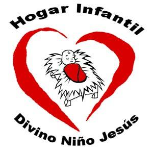

El HOGAR DE NIÑOS "DIVINO NIÑO JESUS" es un hogar de día (gratuito) que recibe a familias carenciadas.
La misión de cada uno de los colaboradores del hogar es asistirlos en la educación y problemas sociales.
Se les brinda alimentación, vestimenta, se los envía en contraturno a la escuela.
Se les ofrece apoyo en la medida de lo posible. Todo las personas que trabajamos, realizamos la tarea con la modalidad de voluntariado, no recibiendo remuneración alguna. Nos mantenemos con la ayuda de colaboradores.
Estamos trabajando también con adolescentes y jóvenes, en su reinsención social y capacitación laboral.
"El Hogar Infantil Divino Niño Jesus" es una entidad sin fines de lucro, Dirigido por las Hijas del Corazón Misericordioso de Maria, establecido desde el 1 de Agosto de 1997 .
A partir del 26 de Diciembre de año 2002, el Jardin Infantil Divino Niño Jesus es dirigio por la Hermana Angela Maria Arroyave Mesa, quien con su dedicacion y compromiso ha logrado un crecimiento personal en un ambiente de libertad responsabilidad, tranquilidad, respeto, honestidad, amistad y convivencia armonica de los Estudiantes, contribuyendo con sus acciones comprometidas al mejoramiento permanente de la calidad de vida.
A partir de esta fecha el Cuido ha mantenido la apertura y actitud de renovación, formando niños lideres, independientes y autónomos. Todo esto se logra con muchas ganas, preparación, estudio y con el apoyo de Las Hermanas Luz Amanda Zuluaga, (Amor Lindo), Ludovina Espitia (Lulu) , Leydy Estupiñan ( Mi Amado Jesus) , y el grupo de maestros y ayudantes con los mismos intereses y necesidades para alcanzar el conocimiento de una manera práctica, segura y divertida. Nuestro proposito es contribuir con el Crecimiento , el Amor, y el Respeto a Dios como ser Supremo.
GRACIAS A TODOS AQUELLOS QUE NOS DAN UNA MANO
SON PARTE DE ESTA OBRA
QUE CONSTRUIMOS ENTRE TODOS
Padre Arrieta 2150, 1712, Castelar, Buenos Aires
TEL.: (011) 46239506 / 1557730496
melaniatizziani@hotmail.com